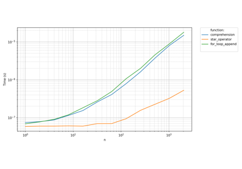
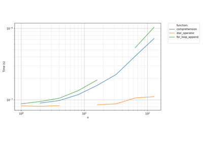
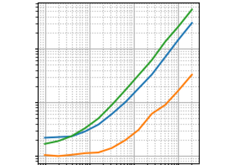
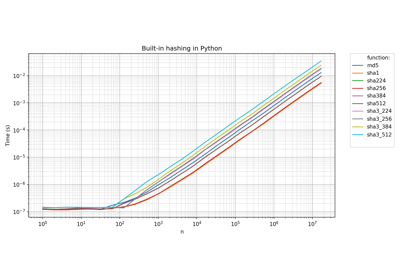
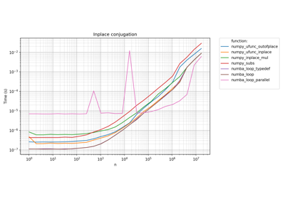

Gallery#
This gallery gathers a few example, demonstrating the capabilities of
pyquickbench.The dependencies needed to run the examples can be downloaded directly with pip:
pip install pyquickbench[docs]
Tutorial#
This is the best place to learn how to use pyquickbench.

A first benchmark



Handling errors

Plotting transformed values

Time-consuming benchmarks


Benchmarks#
This is a collection of actual benchmarks performed on the author’s laptop computer.

Description of the benchmark machine
Description of the benchmark machine

Time benchmark of built-in hashing in Python
Time benchmark of built-in hashing in Python

Benchmark of inplace conjugation of arrays
Benchmark of inplace conjugation of arrays
Numpy array initialization